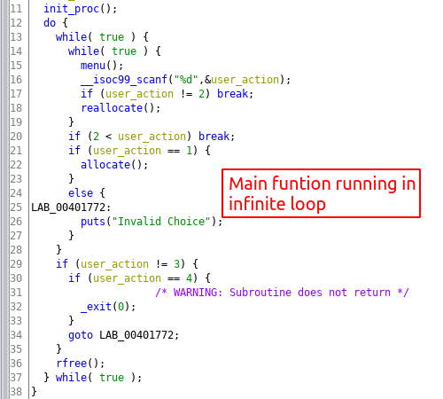

Binary Exploitation [pwnable.tw] - Realloc
Challange Description
| Name | Realloc |
| Points | 200 |
| Solves | 115 times |
| Libc | 2.29 (with tcache enabled) |
| Category | Exploitation |
| Description | I want to realloc my life :) |
Binary Protection
PIE is disabled, this will make our address leaking task easies as we can leak address from know location.
Vulnerable Application
The challenge binary is not very complex, it main loop which takes use action and triggers the corresponding function :

The main function can trigger three other functions based on user action. The allocate functions allocates a memory chuck on heap and stores in global array pointer(heap var) and the index of the array is taken from the user. Maximum size of the array is 2 and this check is done in all the function accessing the array.
reallocate function reallocates a heap memory chuck. The function prompts the user for the array index and the size of the new chunk.
You can also free the allocated object, for that user is asked for the index and then the corresponding entry in the array is set to null.
Malloc Spec
The clever thing about this challenge is how it repurposes the realloc function to do heap memory related operation like allocate(malloc), reallocate(realloc), and free heap memory chunk.
Following is the description of how realloc can be repurposed to different heap operation:
- realloc(ptr, NULL): same a free(ptr).
- realloc(ptr, size): expand/shrink the memory chunk base on requested size. If the size value is the same as the old chunk size then nothing is done and the same memory chunk is returned.
- realloc(NULL, size) : same as malloc(size)
Challenge Constraints
Some constraints of the application that make this challenge very tricky.
- We can allocate the memory chunk less than 120 bytes. This limit the attack to tcache bins only.
- You can only store two memory chucks at any point of time in the global array.
- There is a buffer size check when reading user input for content of the memory chunk so, we cannot do any buffer overflow.
Vulnerable Code
The vulnerability is in reallocate function, as we saw earlier that if we call realloc(ptr, 0) ( with size 0) it is as good as calling *free(ptr). The function doesn’t check for reallocation size so we can convert the realloc(ptr, size) call to a free(ptr) call and, Since the array storing the pointer to the memory chunk is not set to null it leads to use-after-free vulnerability.
The libc version provided in the challenge is 2.29 which has tcache bins enable, the first thing that came to my mind was the tcache poisoning attack but the double-free vulnerability has been mitigated in libc version 2.27 and later and above. The mitigation is done by checking if the memory chuck is present in the tcache list by traversing the link-list in which the free operation is trying to insert. But, it is possible to bypass this mitigation and we will leverage that to gain arbitrary write, I will discuss the bypass in the next section.
Arbitrary Write
Usually, when solving these kinds of challenges I first try to do the libc leak but in this challenge, the way to get the libc leak is through arbitrary write primitive. So let’s first try to understand what is the write primitive is available in this challenge.
We discuss previous that double-free tcache poisoning attack is not possible the libc version which the binary is using. So, after scratching my head for a couple of hours and the idea surfaced in my mind. The clue was in the name of this challenge, the chuck we free will be placed a tcache bin freelist and the freelist selected based on the chunk size, but if you try to free the same chuck again tcache corruption error will be thrown because freelist selected for the check is done is based on the chuck’s size. But if we can the chuck size by realloc call then the check will be done, then the check will be done on the freelist corresponding to that chunk size. So if we free a chuck then resize the same chuck using use-after-free and again free that same chuck we can bypass the double-free security check.
We can use this attack to put the address of location we want to write in tcache, next malloc call will return that address and we can write any data to that address. Below is the code for what discussed so far.
1 | app = App(io) |
After this executing the above code the tcache bin should look like this
The Leak
Now since we have arbitrary write how can we use it do a libc address leak? We can overwrite a GOT table entry since the PIE is disabled the GOT table will be located at a fixed address. Ok good, but which table entry should we overwrite? and with what value? a good candidate will be the function whose parameter we can fully control and the function matching the criteria is atoll. This function is used to convert the input string to a long number and, it is used every time the application wants to take a number as an input from the user.
the atoll function can be patched with printf function because we can use this function leak data from the stack using format string attack. We will patch the GOT entry of atoll function with PLT entry of printf function since we don’t know the address of printf function and PLT has that address stored so it will be a good target to redirect the GOT entry. Below is the code
1 | # Start patching ATOLL function |
Once the patch is done the GOT table will look as shown below:

Now that we can control a printf function’s first parameter(via atoll) we can use this primitive to leak address from the stack, using format string vulnerability. We can pass value such as %p to leak stack data as a pointer, you can leak more data by passing more %p but since the input buffer is limited a more viable option will be to get pointer data from an offset to that you will have to use %10$p with this you can leak a pointer at an offset of 10. This method can be used to leak the entire stack of a running process. But that’s not necessary in our case, we can just need to leak data at an offset where there is a pointer in libc memory range which after some digging it found it on an offset 21. Below is the stack dump which shows that there is an address which we can leak
The address we are leaking is the return address of main function which is into __libc_start_main function. This function code resided in libc code range so if we are able to leak this address we can calculate the libc base address by subtracting the offset which in our case is 0x26b6b. Below is the code to achive what we just discussed :
1 | def leak_stack(offset): |
Code Execution
Now that we the libc base address we can calculate the system function address and again overwrite the atoll function with the system function. The atoll function is again going to be the victim because we have full control of its parameter. Once we have patched atoll function GOT table should look like this
After the patch we can call the atoll function with ‘/bin/sh’ will give us shell. Below is the code to achieve this:
1 | libc = ELF('./libc-ctf.so') |
Exploit
Here is the full working exploit :
1 | #!/usr/bin/env python2 |
Conclusion
This challenge was very tricking to exploit. We had to use many tricks to do a libc leak such as GOT table patching and the using format string not to mention the tcache double free. Once we have done the libc leak we used it to calculate the system function address, again we patch the atoll function with the system function an got the system shell.